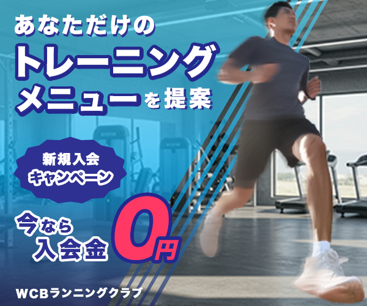

架空のジムバナー
- 自主制作
- #バナー

| 概要 | バナーデザイン練習 10本ノック様より、お題を拝借させていただきました。架空の案件となります。 普段は高齢者向けのウォーキングイベントや子供向けの運動教室をしているが、本格的にスポーツに取り組む大人向けのメニューも充実させたい。 |
|---|---|
| 目的 | 本格的にスポーツに取り組む大人向けの新メニューを効果的にPRし、認知拡大と新規入会者の獲得につなげる。 |
| ターゲット | スポーツが好きで平日の仕事前後や週末も活発にトレーニングしている。 ランニングのレースにも出場する。自己流トレーニングに限界を感じている。 |
| デザイン | デザインは爽やかなブルーを基調とし、背景にはジムの写真を配置することで、 清潔感と本格的なトレーニング環境を演出。 前景にはぼかし加工を施した男性の写真で躍動感を表現し、 「入会金0円」は赤で強調して視線を引くアクセントにしました。 |
| 制作期間 | 1日 |
| 使用したツール | Photoshop |